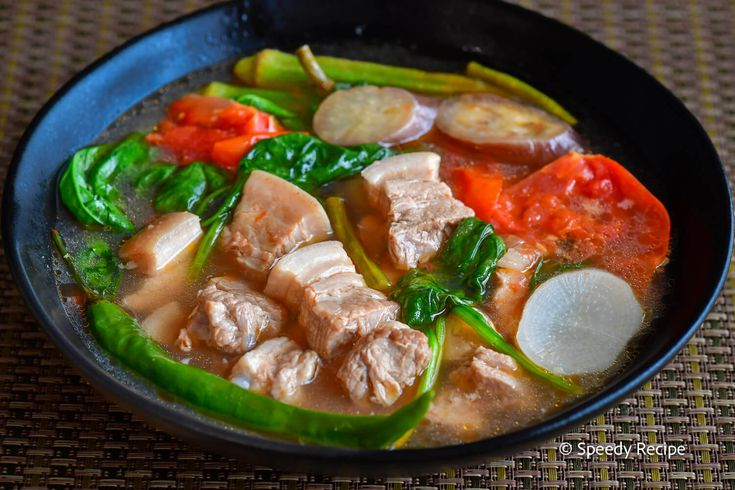

Best Home Dishes
Home Cooks Guide
Sinigang

A sour and savory Filipino soup with tamarind, vegetables, and pork or shrimp.
Adobo

A classic Filipino dish of marinated meat braised in vinegar, soy sauce, and spices.
Lumpia

Filipino spring rolls filled with vegetables and/or meat, served with a sweet dipping sauce.
Sisig

A sizzling Filipino dish made from chopped pig’s head and liver, seasoned with calamansi and chili peppers.